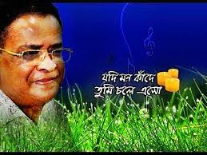
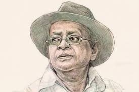
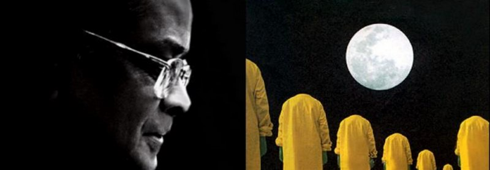

To know more information about Humayun Ahmed, please click the link Humayun Ahmed
  " Humayun Ahmed is one of the most popular Bengali writers of the twentieth century. He is regarded as the best author of the post-independence of Bangladesh. Humayun Ahmed's book is no comparison. Humayun Ahmed is a novelist, novelist, playwright and songwriter. He is said to be the pioneer of modern Bengali fantasy literature. Humayun Ahmed is also praised as a drama and film director. The number of his published books is more than two hundred. He is the father of a new style of dialogue in Bengali fiction. Books by Humayun Ahmed Translated into many languages of the world, some of the texts are included in the syllabus of the school and college. Beginning in the late seventies. Until his death, he was an unconventional craftsman of Bengali story-novels. The popularity of his novels during this period was unmatched. The characters of Humayun Ahmed and Hemu and Misir Ali, created by Humayun Ahmed, deeply engulfed the youth category of Bangladesh. Outstanding viewership. However, his television plays were the most popular. Although not a great number, his songs also gained popularity. One of his novels is Nandit Hell, The Story of Midday, Jochana and Janani, Drunk Hawa. Some of the films he made are Duwari, Shraban Megh Day, Puppet orange etc. The Prophet (202) is an unpublished and unpublished book by Humayun Ahmed."
To end
Press the buttons below to go to the previous page